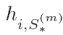
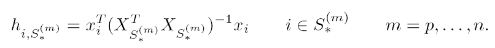
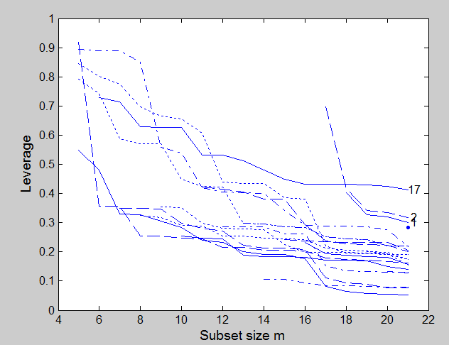

| Flexible Statistics Data Analysis Toolbox™ |
|
Leverage values in each step of the forward search.
levfwdplot(out)
levfwdplot(out,param1,val1,param2,val2,...)
levfwdplot(out) plots the trajectories of the leverage as soon as units join the subset.

At the start of the search we have only p observations, each of which has leverage one. The leverages decrease thereafter.
levfwdplot(out) needs as input the following information
LEV − a matrix containing the leverages monitored in each step of the forward search. Every row is associated with a unit. This matrix can be created using function FSReda (compulsory argument)
levfwdplot(out,param1,val1,param2,val2,...) specifies one or more of the name/value pairs described in the following table.
| Parameter | Value |
|---|---|
| 'subsize' |
numeric vector containing the subset size with length equal to the number of columns of matrix residuals If it is not specified it will be set equal to size(residuals,1)-size(residuals,2)+1:size(residuals,1) |
| 'selline' |
numeric vector of length 1 or 2 which specifies the
lines to highlight. |
| 'unselline' |
Specifies how the trajectories of the leverage are represented when they are not selected. 'faint': the trajectories associated with smaller residual take colors towards cyan, those with bigger residual take colors towards blue. 'hide': the trajectories with residual below a certain threshold are hidden. 'greysh': the trajectories with residual below a certain threshold are displayed in a faint grey. The default option when n>100 is 'faint' else when n<=100 the default option is '' |
| 'selunit' |
Cell array of strings, string or numeric vector. If it is a cell array of strings only the lines associated with the units which, in at least one step of the search had a residual smaller than selunit{1} or greater than selline{2} will have a textbox. If it is a string it specifies the threshold above which labels have to be put. For example selunit='2.6' means that the text labels are written only for the units which have in at least one step of the search a value of the scaled residual greater than 2.6 in absolute value If it is a numeric vector it contains the list of the units for which it is necessary to put the text labels. The default value of selunit is string '2.5'. |
| 'selunitbold' |
Scalar specifying line width for the units selected in vector selunit. Default is '' |
| 'selunitcolor' |
cell containing the colors to be used for the
trajectories associated with the units in selunit If
length(selunitcolor)==1 the same color will be used for
all units in vector selunit |
| 'mark' |
scalar controlling whether to plot lines as markers. if 1 each line is plotted using a different marker else no marker is used (default) |
| 'xlim' |
Vector with two elements controlling minimum and maximum on the x axis. Default value is '' (automatic scale). |
| 'ylim' |
Vector with two elements controlling minimum and maximum on the y axis. Default value is '' (automatic scale) |
| 'tag' |
String which identifies the handle of the plot which is about to be created. The default is to use tag 'pl_levfwd'. Notice that if the program finds a plot which has a tag equal to the one specified by the user, then the output of the new plot overwrites the existing one in the same window else a new window is created |
| 'datatooltip' |
Empty value or structure. The default is datatooltip='' If datatooltip is not empty the user can use the mouse in order to have information about the unit selected, the step in which the unit enters the search and the associated label If datatooltip is a structure, it is possible to control the aspect of the data cursor (see function datacursormode for more details or the examples below). The default options of the structure are DisplayStyle='Window' and SnapToDataVertex='on' |
| 'label' | Cell containing the labels of the units (optional argument used when datatooltip=1. If this field is not present labels row1, ..., rown will be automatically created and included in the pop up datatooltip window) |
| 'databrush' |
The core of this option is selectdataFS, a function used by all graphic tools of the FSDA toolbox. A separate common page details all databrush options. |
| 'nameX' |
cell array of strings of length p containing the labels of the variables of the regression dataset. If it is empty (default) the sequence X1, ..., Xp will be created automatically.. |
| 'namey' | character containing the label of the response. |
| 'titl' | A label for the title (default: ''). |
| 'labx' | A label for the x-axis (default: 'Subset size m') |
| 'laby' | A label for the y-axis (default: 'Leverage'). |
| 'lwd' | Scalar which controls line width of the curves which contain the score test. Default line width=1.1. |
| 'FontSize' | Scalar which controls the font size of the labels of the axes. Default value is 12. |
| 'SizeAxesNum' | Scalar which controls the size of the numbers of the axes. Default value is 10. |
In this example we construct the monitoring leverage plot for the stack loss data
load('stack_loss.txt');
y=stack_loss(:,4);
X=stack_loss(:,1:3);
[out]=LXS(y,X,'nsamp',0);
[out1]=FSReda(y,X,out.bs,'init',5);
% Plot monitoring of leverage
levfwdplot
(out1,'selunit','0.4')

FSReda, resfwdplot, malfwdplot
|
|
hyppsider.html | lexunrank.html |
|